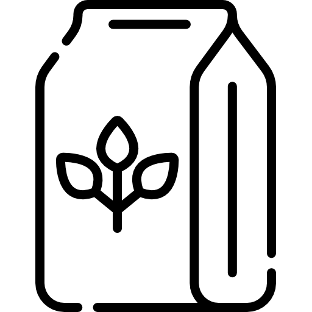

Milk

1. Storage

Fridge temperature: Milk is good for 7 days in your fridge.

Room temperature: Store it in the back of your fridge for the coldest temperatures.
2. Characteristics
- Provides: whole cow’s milk contains protein, fat, calcium, potassium, B12, calcium and vitamin D
- Shouldn’t go with: fish, banana, melons, sour things
- Signs of expiration: milk that has gone sour, starts to get chunky
3. Recommended dish: Coconut Milk Braised Chicken


a. Ingredient
- 4 lb. whole chicken
- 4 tablespoons melted coconut oil, divided
- 1 tablespoon + 1 teaspoon ginger paste, divided (see notes)
- 1 tablespoon lemongrass paste
- 1 teaspoon fine sea salt
- Zest and juice of 1 lime
- 4 cloves garlic, minced
- 1 tablespoon Thai green curry paste
- 10 stems cilantro, leaves and stems separated
- 14 ounce can coconut milk, about 2 cup

b.Instructions
- Preheat the oven to 325 degrees.
- In a small bowl, mix 2 tablespoons of the melted coconut oil with 1 teaspoon of the ginger paste, the lemongrass paste, and salt. In another small bowl, mix the remaining tablespoon of ginger paste with the lime zest and juice, garlic, green curry paste, and the cilantro stems
- If there is a string tying your chicken, remove it. Dry the chicken with paper towels. Carefully separate the skin from the chicken breast, trying not to tear the skin. Using a spoon, spread the mixture with the lemongrass under the chicken skin. If any gets on the chicken skin, remove it with paper.
- Heat one tablespoon of oil in a large pot or braiser. Place the chicken in the pan, bottom side down to start, and sear it on all sides until it is nicely browned. Use a pair of tongs to turn the chicken, inserting one tong end into the chicken and gripping with the other tong end on the outside of the chicken. When brown, remove the chicken from the pan and pour out the oil.
- Add the remaining tablespoon of oil to the pot then pour the mixture from the remaining small bowl into the pot. Let it cook for 1 minute then pour in the coconut milk. Put the chicken in the pot, breast side up. Cover the pot and put it in the oven for 2 hours.
- Remove the chicken from the pot and let it rest for 10 minutes before carving. Bring the liquid that is in the pot to a boil over high heat until it reduces to 1 cup.
- Serve the chicken with the reduced sauce on the side and some cilantro leaves sprinkled over the top.